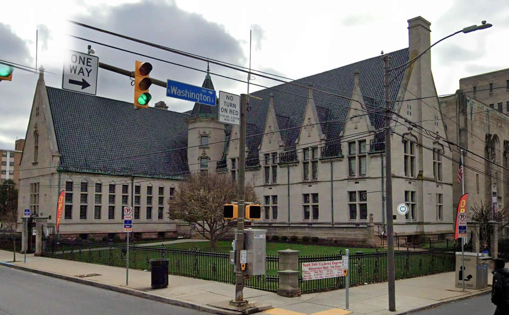
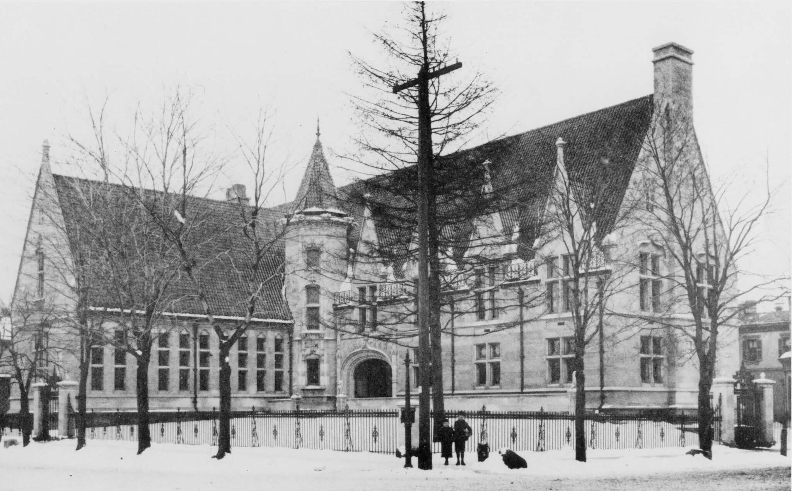

Scranton, Pennsylvania · Then & Now
Albright
Memorial Library
Opened in 1893 and modelled on the Musée de Cluny in Paris, the Albright was designed by the Buffalo firm Green & Wicks. Its stained glass reproduces historic bookbinders’ marks, and stone owls and lions guard the door. A century on, what has changed is mostly the signage.
c. 1900
Today


Drag to compare · arrow keys to scrub
ThenPhotograph, “Scranton Public Library — Albright Memorial Building.” Undated; placed around 1900.
NowGoogle Street View. Imagery © Google.
On the fitThe building is essentially unaltered and both frames sit at almost the same distance, so this pair needed only a crop and a scale — no perspective correction.